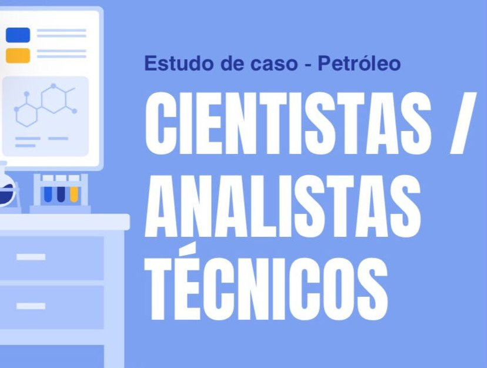

O que estudei
- Química orgânica e funções orgânicas
- Funções orgânicas presentes em produtos do cotidiano
- Reações químicas e polímeros
A química orgânica estuda substâncias formadas principalmente por carbono. Elas são separadas em funções, de acordo com os átomos da molécula. O álcool em gel, o vinagre e a acetona são de funções diferentes.
Numa reação química, as substâncias se transformam em outras. A ferrugem do portão é um exemplo, e a queima da gasolina é outro.
Polímero é uma molécula grande, feita de muitas partes repetidas. O PET é um polímero, e a celulose do papel também. O problema dos plásticos é o descarte, já que eles demoram muito para se decompor.
O petróleo é uma mistura de compostos orgânicos. Dele saem combustíveis e a matéria-prima de vários plásticos.
Atividades e trabalhos
- Estudo de caso: Petróleo (em grupo)
- Pesquisa: Funções Orgânicas e Produtos do Cotidiano
- Exercícios de Química Orgânica
- CN – Química: Termo Orgânico
- Reações Químicas e Polímeros
No estudo de caso, nosso grupo ficou com o papel de cientistas e analistas técnicos e olhou para o petróleo como um profissional da área olharia.
Na pesquisa, a tarefa era achar funções orgânicas em produtos que a gente usa em casa.
Evidências da aprendizagem
Um dos slides do estudo de caso.

Minha reflexão
O petróleo também é assunto de empresa, porque envolve dinheiro e meio ambiente ao mesmo tempo. Por isso combina com a Administração, que é a área que quero seguir.